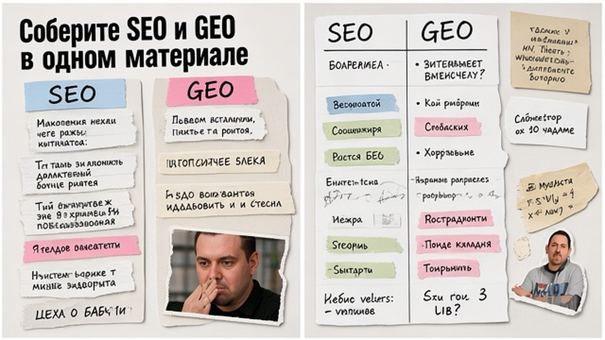
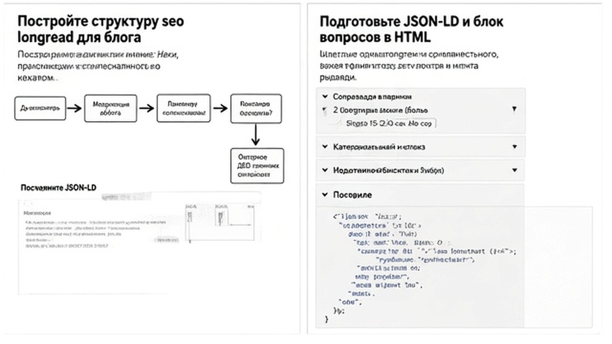

SEO-статья в 2026 году - это не полотно ключей, а longread, который человек дочитывает до конца и который нейропоиск может процитировать кусками. Если вы ищете, как писать seo статьи без воды, соберите один workflow: семантика, структура H1-H3, lead, FAQ и geo оптимизация статьи в том же файле. Ниже - пошаговый процесс; эта страница сама следует описанным правилам.
TL;DR / Быстрый инсайт: Закройте один запрос (how-to) одним материалом: primary query в lead и Title, каждый H2 - самостоятельный ответ, FAQ 5-7 пар и JSON-LD BlogPosting + FAQPage (schema - отдельно от body). GEO не заменяет SEO: сначала индексируемый полезный текст, потом атомарные чанки и llms.txt. Универсального объема нет - ориентир для глубокого гайда в нашей редакции 8 500-9 500 знаков при полноте ответа.
Запрос "которые читают люди" редко попадает в заголовки конкурентов, хотя именно он отличает живой seo текст для блога от переспама. Мы в Maya AI ведем utility-only блог: только инструкции и чеклисты, без новостей ради клика. Один longread закрывает и классическую выдачу, и цитирование в AI-ответах, если не дробить SEO и GEO на два разных проекта.
Перед текстом имеет смысл открыть Яндекс Вордстат и выдачу по primary query: так видно, какие H2 ждут люди и где у конкурентов провал по читабельности. Канон по композиции и мета - в материалах Яндекса про SEO-текст (актуализация 27.01.2026).

SEO отвечает за клик из сниппета и удержание на странице. GEO (Generative Engine Optimization) - оптимизация под генеративные ответы: когда пользователь спрашивает нейросеть, а не строку поиска. GEO не заменяет SEO: без индексации и нормальной структуры AI просто не увидит ваш материал. Для RU-рынка классический топ Яндекса остается фундаментом для нейроответов - писать "только под робота" бессмысленно.
Делайте: под каждым H2 сразу давайте содержательный ответ на подвопрос (snippet-first). Не делайте: отдельный "SEO-текст" и отдельный "GEO-текст" - это один longread с атомарными блоками. Плотность информации важнее длины: ответ как можно раньше, без вступления на три экрана.
| Критерий | SEO | GEO |
|---|---|---|
| Цель | Клик и дочитывание | Цитирование фрагмента в AI-ответе |
| Единица смысла | Страница + сниппет Title/Description | Абзац, список или пара FAQ |
| Структура | Один H1, H2-H3 без пропуска уровней | Острова смысла: блок понятен без соседних абзацев |
| Техника | Семантика, перелинковка, alt | FAQ в HTML, llms.txt, чистый HTML для краулеров |
Схема workflow:
Интент и запросы → семантическое ядро → outline H2/H3 → lead → текст с чанками → мета → FAQ → schema JSON-LD → чеклист перед публикацией
Файл llms.txt подсказывает AI-краулерам, что индексировать на сайте. Это полезный сигнал рядом с sitemap, но не замена robots.txt. Держите HTML семантическим: без скриптов и инлайновых стилей в теле статьи - так материал одинаково живет на сайте и в RSS (в том числе Дзен).
Универсального объема SEO-статьи не существует - он зависит от темы и конкуренции; критерий полноты ответа подтверждает и официальный гайд Яндекса. Для how-to longread в Excalibur BLOG мы держим 8 500-9 500 знаков текста: достаточно глубины без монолита. H1 на странице один; H2-H4 делят материал на смысловые блоки. Главный ключ - в H1, первом абзаце, одном-двух H2, Title и Description; LSI (смежные формулировки) - по тексту, без насильственных повторов.
Title для сниппета - ориентир около 65 знаков с ключом и триггером ("гайд", "чеклист", "пошагово"). H1 не дублирует Title дословно: Title продает клик в выдаче, H1 обещает на странице. Абзацы лучше короткие (3-6 предложений); списки и таблицы улучшают восприятие и помогают нейросетям вырезать факты.
Делайте: seo копирайтинг как диалог с коллегой - живо, с рекомендацией в каждой секции. Не делайте: запросный спам, скрытый текст и переоптимизацию - поисковики оценивают пользу для людей. Если читатель после вашей страницы снова уходит в поиск, это сигнал неполного ответа.
Experience, Expertise, Authoritativeness, Trustworthiness - не отдельный рекламный блок, а следы в тексте: указание автора или редакции, дата актуализации, ссылки на канон (Яндекс Direct, проверенные гайды). Не публикуйте проценты прироста трафика без верифицируемого источника - trust падает быстрее, чем от слабого Title.

Блок "Частые вопросы" в HTML - готовые чанки под расширенные сниппеты и AI-ответы. Вопросы берите из реальных формулировок ("сколько символов", "что такое geo в seo", "нужен ли переспам"). Ответы - 2-4 предложения с действием, не пересказ всей статьи.
Для блога базовый набор schema - BlogPosting и FAQPage в JSON-LD; разметку добавляет отдельный шаг пайплайна, в body не вставляйте сырой JSON. Текст в FAQ и в schema должен совпадать с видимым HTML - расхождение бьет по доверию к разметке.
Делайте: один блок FAQ с заголовком h2 "Частые вопросы". Не делайте: второй FAQ-блок с другим названием - на live-сайте возможен дубль от темы WordPress. Alt у иллюстраций описывает сцену, а не "seo картинка ключ".
Когда накопите материалы по geo оптимизация статьи, свяжите их перелинковкой с главной блога - так поисковик и люди видят кластер, а не одиночный пост.
Финальный прогон - 15-20 пунктов. Сохраните список как шаблон и отмечайте галочки перед каждой публикацией.
Делайте: прогоняйте чеклист на каждом материале одинаково. Не делайте: публиковать "как получится" - один пропущенный FAQ ломает и GEO, и доверие читателя.
Закрепите ритм: тема из семантического ядра → research → longread по контракту → QA → публикация. Вторая статья с перелинковкой на этот гайд усилит кластер "как написать seo статью". Раз в квартал обновляйте даты и факты в старых постах. Если вам нужен не разовый текст, а воспроизводимый контент-конвейер с автоматизацией публикаций, посмотрите курс по Make.com и вайбкодингу - там разбирают связку research, шаблонов и интеграций без ручного хаоса.
Материал проверен: эксперт Артур Хорошев (CEO Maya AI, SEO/GEO в контент-стратегии блога).
Достоверность данных: нормы структуры и семантики сверены с гайдами Яндекса Direct; LSI и угол - по SERP и research-notes от 02.10.2026. Показы Wordstat уточняйте в wordstat.yandex.ru на дату публикации.
Универсальной нормы нет - объем зависит от темы и конкурентов. Для глубокого how-to в нашей редакции ориентир 8 500-9 500 знаков, если SERP требует чеклиста и примеров. Сокращайте воду, а не факты: короткий честный ответ лучше раздутого полотна.
GEO дополняет SEO: цель - цитирование в генеративных ответах при том же индексируемом контенте. Начните со структуры H2, FAQ и чистого HTML; schema и llms.txt - следующий слой, не замена тексту.
Нет. Яндекс и отраслевые гайды 2026 года акцентируют органичные вхождения и пользу для людей. Primary query - в заголовках и lead, LSI - естественно по тексту.
Title работает в сниппете (около 65 знаков, ключ и триггер). H1 - заголовок на странице. Не копируйте их дословно: разные роли, один интент.
Минимум BlogPosting и FAQPage, если в HTML есть блок вопросов. JSON-LD готовит отдельная роль пайплайна; текст FAQ должен совпадать с видимой версией.
llms.txt - файл-подсказка для AI-краулеров, что индексировать на сайте. Полезное дополнение к sitemap, не замена. Имеет смысл, если вы целитесь в нейропоиск и RSS-синдикацию.
Пройдите чеклист из секции выше: семантика, мета, H2-чанки, FAQ, schema, ссылки, читабельность, island test. Затем отдайте материал на GEO QA: linter HTML, slop, каннибализация ключей и fact-check.